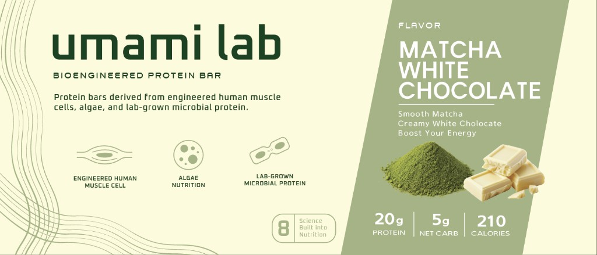
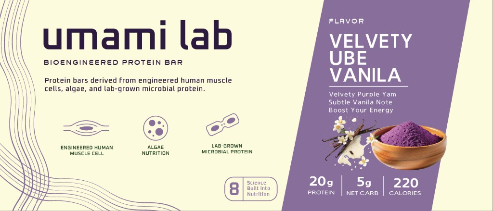
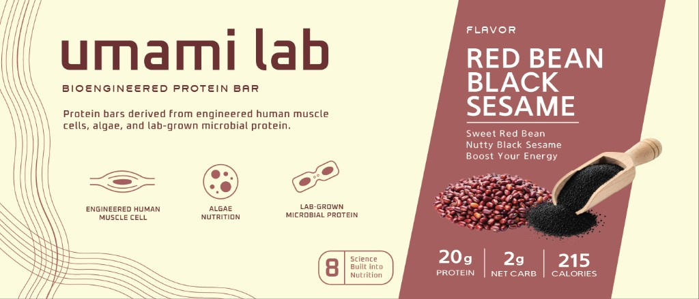
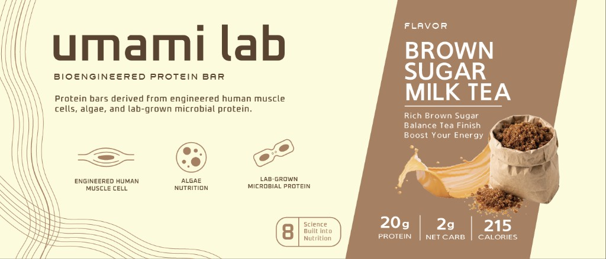
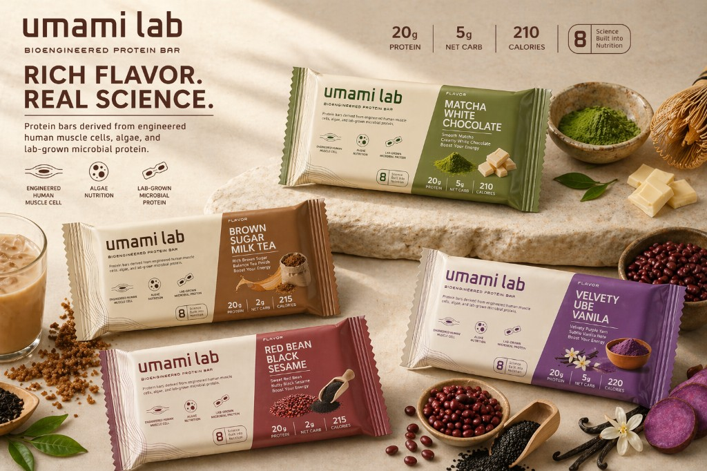

UMAMI LAB (2026)

Graphic Design | Packaging Design
Tools: Adobe Illustrator, Figma
Umami Lab explores futuristic protein bars made from engineered human muscle cells, algae, and lab-grown microbial protein. The project deliberately occupies uncomfortable territory, treating food not merely as sustenance, but as a lens through which to examine ethical boundaries, emerging biotechnology, and the cultural taboos that define what we consider edible.
Overview
The packaging system is designed for a lineup of four distinct flavors:
- Matcha White Chocolate
- Ube Vanilla
- Red Bean Black Sesame Cream
- Brown Sugar Milk Tea
Visually, the design balances clinical precision with consumer accessibility. Clean typography, minimal iconography, and structured layouts reflect the scientific and engineered nature of the product, while soft gradients and appetizing ingredient imagery maintain a sense of approachability.
Each flavor is differentiated through color, green for matcha, purple for ube, and so on, allowing for a cohesive yet flexible system across the product line.
Progress
The process began with research into existing protein bar designs, pulling inspiration from packaging I found compelling. A mood board built around the keyword “biotech nutrition” shaped the visual direction early on. One image in particular stood out: a beige-toned composition featuring DNA iconography, which later became a key reference point and informed the decision to incorporate similar motifs into the final packaging design.
Final Illustration




Final Deliverable

Key takeaways
At its core, this project is defined by ethical complexity. The use of engineered human muscle cells as a food source challenges deeply ingrained cultural taboos and raises questions around consent, identity, and the boundaries of consumption. This makes the brand inherently controversial, forcing both designer and viewer to confront discomfort.
For me as a designer, this project required a deliberate separation between personal ethics and professional responsibility. While the premise may not align with one's own values, the role demands engaging critically and thoughtfully with the brief. Rather than avoiding the controversy, the design leans into it, using clarity, restraint, and credibility to present the product as plausible and real. This reflects a key challenge in design practice: the ability to navigate ethically ambiguous briefs while still producing rigorous, intentional work.
Ultimately, this project is not just about packaging a product, but about exploring how design can shape perception, normalize emerging technologies, and provoke dialogue around what we consider acceptable in the future of food.